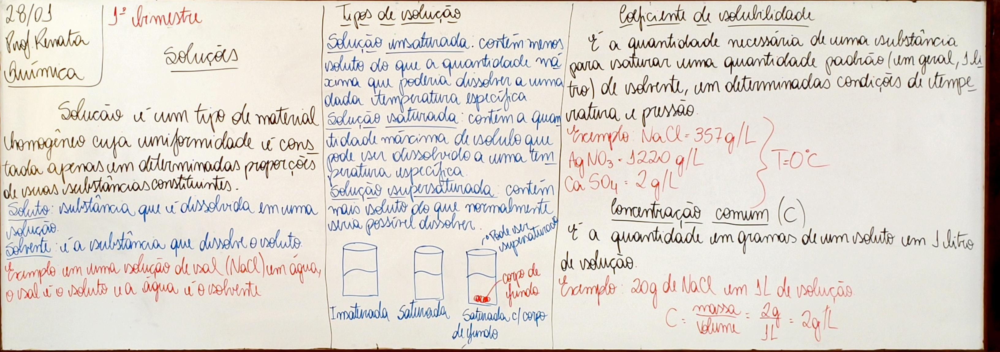
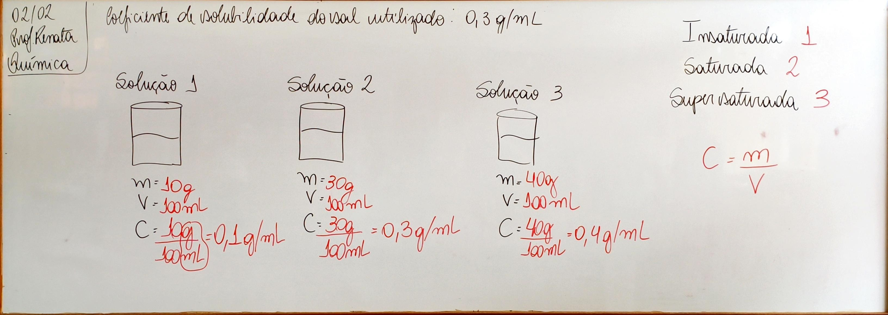
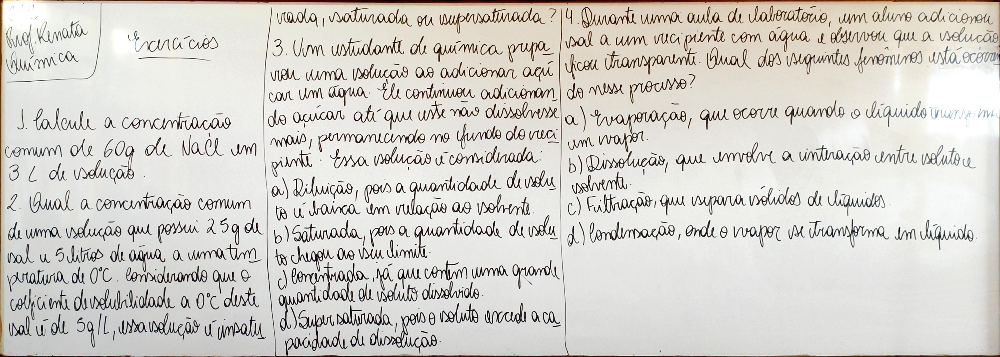
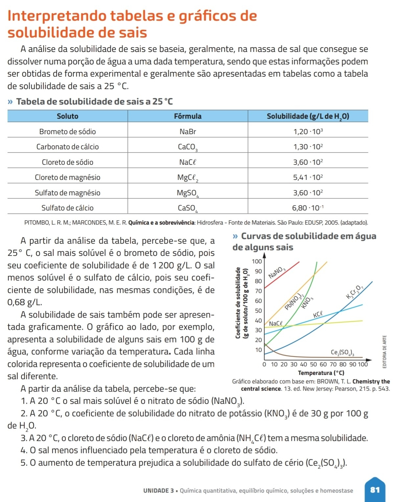

Texto 1: Perturbações ambientais Impactos da Poluição e a Química Ambiental
A análise de perturbações ambientais requer uma abordagem detalhada das fontes de poluição, como emissões industriais, resíduos agrícolas e esgotos urbanos, além de investigar como esses poluentes são transportados pelo ar, solo e água até atingirem seus destinos. A química desempenha um papel central nesse processo, pois nos permite entender as reações químicas que os poluentes sofrem ao longo de seu percurso, como sua decomposição, transformação em substâncias ainda mais tóxicas ou a bioacumulação em organismos vivos. Por meio do estudo das interações químicas, é possível prever os efeitos negativos dos poluentes nos sistemas naturais, como a acidificação dos solos e corpos d’água, a contaminação das cadeias alimentares e a degradação de habitats essenciais. Nos sistemas produtivos, isso pode se manifestar como a perda de produtividade agrícola devido à poluição do solo e da água, além de impactos na saúde humana, como o aumento de doenças respiratórias e o comprometimento da qualidade de vida em áreas urbanas. Com esse conhecimento químico, podemos propor soluções eficazes, como o tratamento químico de efluentes, a neutralização de ácidos no solo, o desenvolvimento de tecnologias para captura de gases poluentes e a formulação de políticas ambientais mais rigorosas. Essas ações são essenciais para mitigar os impactos ambientais e garantir a manutenção da qualidade de vida humana em um mundo cada vez mais ameaçado pela poluição.
1. Quais tipos de poluentes são identificados no texto e quais são suas fontes principais?
O texto identifica poluentes provenientes de emissões industriais, resíduos agrícolas e esgotos urbanos. Essas fontes liberam substâncias químicas que contaminam o ar, o solo e a água.
2. De que maneira a química contribui para a compreensão dos processos pelos quais os poluentes afetam o meio ambiente?
A química contribui permitindo compreender as reações químicas que os poluentes sofrem no ambiente, como sua decomposição, transformação em substâncias mais tóxicas e bioacumulação em organismos vivos.
3. Quais são os efeitos negativos da poluição nos sistemas naturais e produtivos mencionados no texto?
Nos sistemas naturais, a poluição pode causar acidificação dos solos e das águas, contaminação das cadeias alimentares e degradação de habitats. Nos sistemas produtivos, pode provocar perda da produtividade agrícola e impactos na saúde humana, como doenças respiratórias e diminuição da qualidade de vida.
4. Quais soluções químicas são sugeridas para mitigar os impactos da poluição na saúde humana e no ambiente?
O texto sugere soluções como o tratamento químico de efluentes, a neutralização de ácidos no solo, o desenvolvimento de tecnologias para a captura de gases poluentes e a adoção de políticas ambientais mais rigorosas.
5. Como a análise das interações químicas pode ajudar na formulação de políticas ambientais mais eficazes?
A análise das interações químicas permite prever os efeitos dos poluentes no ambiente e na saúde humana, fornecendo base científica para a criação de políticas ambientais mais eficazes, voltadas à prevenção e redução da poluição.
Texto 2: O Papel da Química na Gestão de Resíduos: Reciclagem, Reutilização e Sustentabilidade
A química exerce um papel fundamental na gestão de resíduos, pois permite compreender as características químicas, físicas e biológicas dos materiais descartados. Esse conhecimento é essencial para desenvolver estratégias de reciclagem, reutilização e reaproveitamento de recursos de forma sustentável, reduzindo os impactos ambientais causados pelo descarte inadequado. A correta distinção entre lixo, resíduo e rejeito é indispensável para o gerenciamento eficiente dos materiais. Embora esses termos sejam frequentemente usados como sinônimos, eles representam conceitos diferentes e determinam as formas de tratamento e destino dos materiais descartados. O lixo corresponde a materiais que são descartados por não apresentarem utilidade imediata. No entanto, dependendo de sua composição química e física, muitos desses materiais podem ser reaproveitados ou reciclados. O resíduo é o material que sobra de processos de produção, transformação ou consumo e que ainda possui potencial de reutilização ou reciclagem. A química é essencial para identificar suas propriedades e possibilitar sua transformação em novos produtos por meio de processos químicos, físicos ou biológicos. Já o rejeito é o material que não pode ser reaproveitado com as tecnologias atualmente disponíveis, sendo geralmente destinado a aterros sanitários ou à incineração. A grande quantidade de rejeitos evidencia a necessidade de avanços científicos e tecnológicos que permitam reduzir esse tipo de descarte. A análise química dos materiais descartados contribui para a diminuição dos rejeitos e para o aumento do reaproveitamento de recursos, promovendo práticas mais sustentáveis e uma relação mais equilibrada entre sociedade e meio ambiente.
1. Qual é a importância da química no gerenciamento de resíduos e na redução dos impactos ambientais?
A química é importante porque permite identificar as características químicas, físicas e biológicas dos materiais descartados, possibilitando desenvolver estratégias de reciclagem, reutilização e reaproveitamento, reduzindo os impactos ambientais.
2. Explique a diferença entre lixo, resíduo e rejeito, de acordo com o texto.
O lixo corresponde aos materiais descartados por não terem utilidade imediata, mas que podem ser reaproveitados. O resíduo é a sobra de processos de produção ou consumo que ainda possui potencial de reutilização ou reciclagem. Já o rejeito é o material que não pode ser reaproveitado com as tecnologias atuais e necessita de destinação final adequada.
3. Por que o resíduo pode ser considerado um material com potencial de reaproveitamento?
Porque ainda possui propriedades que permitem sua reutilização ou reciclagem, podendo ser transformado em novos produtos por processos químicos, físicos ou biológicos.
4. Qual é o destino mais comum dos rejeitos e por que eles representam um desafio ambiental?
Os rejeitos geralmente são destinados a aterros sanitários ou à incineração. Eles representam um desafio ambiental porque não podem ser reaproveitados e sua grande quantidade exige soluções tecnológicas para reduzir esse descarte.
5. Como a análise química pode contribuir para o desenvolvimento de práticas mais sustentáveis na gestão de resíduos?
A análise química permite identificar a composição dos materiais descartados, facilitando sua separação, reciclagem e reaproveitamento, reduzindo a quantidade de rejeitos e promovendo práticas mais sustentáveis.